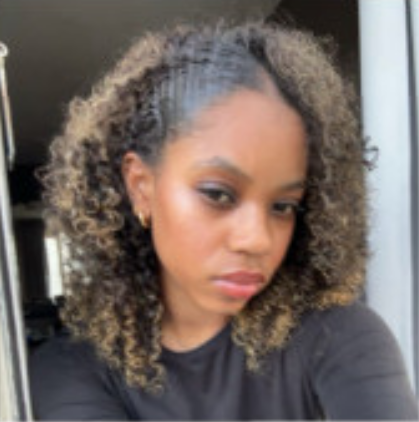
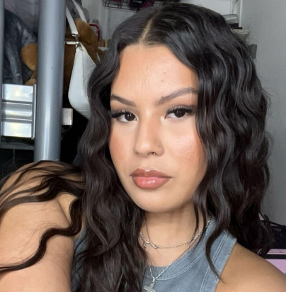

Who are we?
We are three girls who are invested in murdercases and would like to share it with the world.
We wanna invite everyone to discover underrated cases that have not been solved,
but also cases that are well known explored with new ways to look at them.
In 2024 we discovered that all three of us are into true crime and wanted to start a podcast to share all kinds of cases to discuss
but also share with others (you guys!)
So take a look and maybe we'll make more than one season! :)
DONNA
Hi, I am Donna and some of cases I find interesting are The Albert Fish Case and The Junko Furuta Case, I started getting into true crime after discovering some amazing YouTubers during the COVID lock-down. It wasn't something I was "into" before, but just hearing some of these cases I wanted to watch more!
MARY-JAYNE
Hi, I am Mary-Jayne and some of my favorite cases are the Jeffery Dahmer case and the Menendez Brothers case, I started getting into true crime after discovering the cruel story of Jeffery Dahmer. His cruel crimes and the twisted story behind them fascinated me. Since then i've been hooked on discovering new crime cases. I'm excited to dive in these murder mysteries with you, ready to crack these cases with us on What Was The Reason!!!
SARA
Hi, I am Sara and some of my favorite cases are the Jeffrey Dahmer case and the unsolved case of Keneka Jenkins, I started getting into true crime after discovering true crime on socials, which was around 2017. Ever since then ive been invested into crime cases, especially cold cases and sometimes also conspiracy theories.
what can you expect from us?
Each week, we talk about a new case, this can be about a case we found ourselves, but also one sent in by you!
Join us on this thrilling journey together, lets crack the case!
- What was the reason!!
Don't forget to follow us on our socials, Instagram and Youtube: @WhatWasTheReason